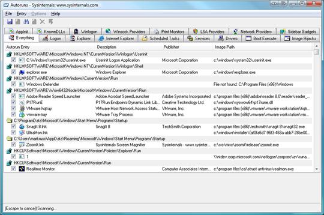

Программа AutoRuns для Windows (версия v11.1)Авторы: Марк Руссинович (Mark Russinovich) и Брайс Когсуэлл Опубликовано 15 ноября 2011 г. ВведениеЭто средство проверяет большее количество мест, из которых происходит автозапуск программ, чем любой другой монитор автозагрузки. Оно показывает, какие программы настроены на запуск в процессе загрузки или входа в систему, причем эти программы отображаются в том порядке, в каком система Windows обрабатывает их. Такие программы могут находиться в папке автозагрузки или быть прописаны в разделах реестра Run, RunOnce и других. Средство Autoruns можно настроить на отображение и других расположений, таких как расширения оболочки проводника, панели инструментов, объекты модулей поддержки обозревателя, уведомления Winlogon, автоматически запускаемые службы и многие другие. Средство Autoruns обладает более широким спектром возможностей, чем служебная программа MSConfig, которая входит в состав Windows Me и XP. Параметр Hide Signed Microsoft Entries (Не показывать элементы с цифровой подписью Microsoft) средства Autoruns позволяет сосредоточить внимание на автоматически запускаемых элементах сторонних производителей, если такие элементы были добавлены в систему. Кроме того, можно просматривать объекты, настроенные на автоматический запуск для других учетных записей, имеющихся в системе. В архив для загрузки также включен вариант программы для работы из командной строки, Autorunsc. Выходные данные этого средства можно получить в формате CSV. Вы, вероятно, удивитесь, как много исполняемых файлов запускается автоматически! Программа Autoruns работает во всех версиях Windows, включая Windows XP 64-bit Edition (для x64) и Windows Server 2003 64-bit Edition (для x64). Снимок экрана ИспользованиеВ статье Марка в выпуске журнала Windows IT Pro Magazine за ноябрь 2004 года описаны дополнительные методы работы с программой Autoruns. При возникновении вопросов или проблем посетите форум компании Sysinternals, посвященный программе Autoruns. Просто запустите средство Autoruns, и оно покажет, какие приложения настроены на автоматический запуск, а также представит полный список разделов реестра и каталогов файловой системы, которые могут использоваться для задания автоматического запуска. Элементы, которые показывает программа Autoruns, принадлежат к нескольким категориям: объекты, автоматически запускаемые при входе в систему, дополнительные компоненты проводника, дополнительные компоненты Internet Explorer (включая объекты модулей поддержки обозревателя (BHO)), библиотеки DLL инициализации приложений, подмены элементов, объекты, исполняемые на ранних стадиях загрузки, библиотеки DLL уведомлений Winlogon, службы Windows и многоуровневые поставщики услуг Winsock. Чтобы просмотреть автоматически запускаемые объекты требуемой категории, достаточно выбрать нужную вкладку. Для просмотра свойств исполняемого объекта, настроенного на автоматический запуск, необходимо выделить этот объект и воспользоваться пунктом меню или кнопкой панели инструментов Properties (Свойства). Если в системе запущена программа Process Explorer, а выделенный исполняемый файл используется каким-либо активным процессом, то при выборе в меню Entry (Элемент) пункта Process Explorer (Process Explorer) откроется диалоговое окно свойств процесса, использующего выделенный объект. Чтобы перейти к разделу реестра или каталогу файловой системы, который отображается в окне программы, либо к настройке объекта, запускаемого автоматически, достаточно выделить нужный элемент и воспользоваться командой меню или кнопкой панели инструментов Jump (Перейти). Чтобы отключить объект, запускаемый автоматически, нужно снять соответствующий ему флажок. Удалить такой объект можно с помощью команды меню или кнопки панели инструментов Delete (Удалить). Чтобы просмотреть автоматически запускаемые элементы для учетных записей других пользователей, достаточно выбрать нужный пункт меню User (Пользователь). Дополнительные сведения по параметрам отображения и другую полезную информацию можно найти в оперативной справке. Использование программы AutorunscAutorunsc — это вариант программы Autoruns для работы в командной строке. Ниже приведен синтаксис использования этого средства. Использование: autorunsc [-x] [[-a] | [-b] [-c] [-d] [-e] [-g] [-h] [-i] [-k] [-l] [-m] [-o] [-p] [-r] [-s] [-v] [-w] [[-z <systemroot> <userprofile>] | [пользователь]]]
Дополнительные материалыСлучай необъясненного... |